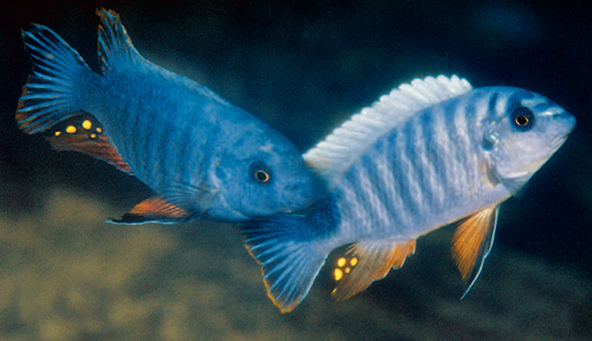

<!DOCTYPE html>
<html lang="en"></html>

<head>
    <title><h1>All About Mbuna Ciclids</h1></title>
    <link rel="stylesheet" type="text/css" href="webpage.css">
    <style>img{width:100%;
    height:100%;}</style>
    


</head>
<body>
    <div class="whole">
     <div class="heading"><h1>All About Mbuna Cichlids</h1>
        <strong>By:</strong> Justin White</div>

        <div class="image">
        </div>
       <div class="container">
        <ul>
         
                <h4> <li><a href="about-history.html">About:</a> Mbuna cichlids are a group of African cichlids that live in Lake Malawi.
                 The name "mbuna" means "rockfish" in the language of the Tonga people of Malawi. Most mbuna live among the rocks and along the rocky shores of Lake Malawi</li>
                 <br>
                    <li><a href="about-history.html">Genome:</a> Lake Malawi contains more than 500 species of cichlid fish that have evolved from a common ancestor within the last million years
                    Mbuna cichlids are a popular group of cichlids from Lake Malawi. When given hard, alkaline water and a healthy tank environment, mbunas typically live for 8-10 years</li>
                 <br>
                    <li><a href="location-temperment.html">Location:</a> Lake Malawi, also known as Lake Nyasa in Tanzania and Lago Niassa in Mozambique, is an African Great Lake and the southernmost lake in the East African Rift system, 
                    located between Malawi, Mozambique and Tanzania</li>
                  <br>
                      <li><a href="location-temperment.html">Temperment:</a> Agressive and Territorial</li>
                  <br> 
                       <li><a href="hobby-care.html">Hobby Care:</a> Mbuna are very aggressive and territorial fish, they are not suitable for beginner fishkeepers. A suitable aquarium setting includes many rocks, adequate filtration, caves, and hiding places; 
                     plants may be uprooted, so they are best avoided, but a small number will work well in the aquarium</li>
                </h4>
         </ul></div>
        
         <div class="link1"><a href="https://whc.unesco.org/en/list/289/">Info About Lake Malawi</a><br>link to external page.
        </div>
         <div class="link2"><a href="https://en.wikipedia.org/wiki/Mbuna">More about Mbuna Cichlids</a><br>link to external page.
        </div>
        <div class="link3"><a href="https://www.aquafishcare.com/african-cichlids-care-tips">Hobby Care</a><br>link to external page.</div>
        
    </div>
</body>